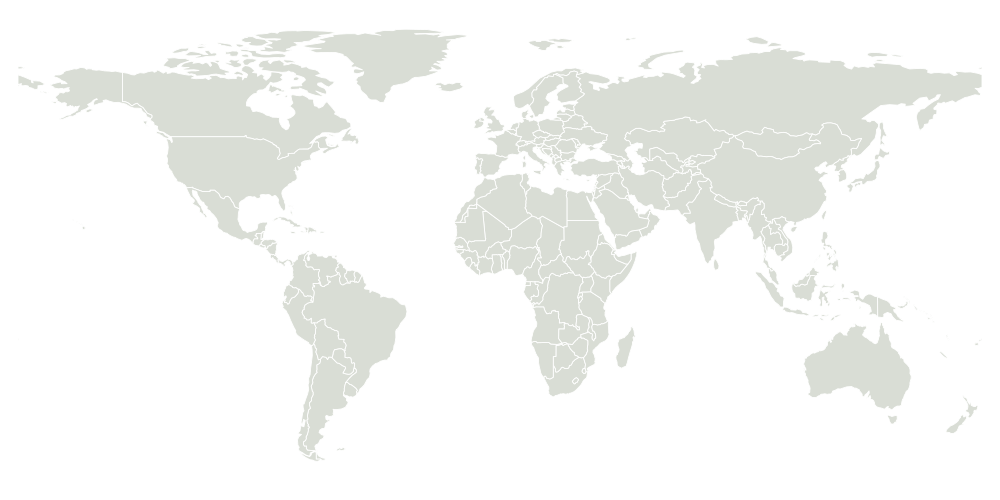

0Total GroupsTraditional communities
Explore Traditional Governments Around the World
A comprehensive database of traditional communities and their governance systems.
0CountriesAround the world
0ContinentsAll continents
0Traditional GovernmentsHave traditional systems
0RegionsGeographic regions
Global Distribution of Traditional Groups
View Full Map
Number of Groups
Latest Added Groups
View All| Group Name | Region | Leadership Type | Recognized |
|---|---|---|---|
| Loading groups… | |||